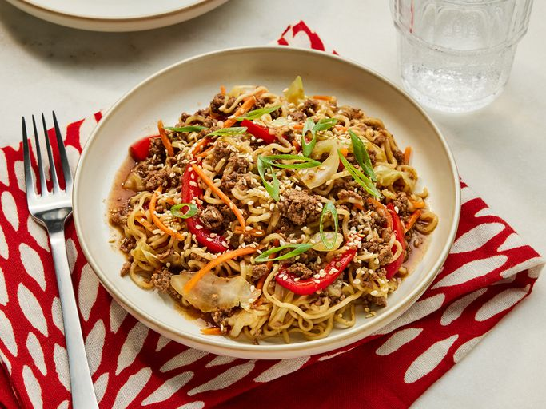

Home
One-Pot Beef Ramen Noodles

Description
When you're craving a flavorful but no-fuss dinner, this One-Pot Beef
Ramen Noodles recipe hits the spot. It's loaded with savory ground beef,
crisp veggies, and soft ramen noodles that soak up all the flavor of the
umami-packed broth. Add a handful of fresh scallions and toasted sesame
seeds for texture and brightness, and you've got a simple, satisfying meal
in under 30 minutes.
Ingredients
- 1 pound 93/7 ground beef
- 3 cups thinly sliced cabbage
- 1 ½ cups thinly sliced red bell pepper
- 3 garlic (minced)
- 2 cups chicken stock
- 3 tablespoons soy sauce
- 3 tablespoons hoisin sauce
-
2 (3 Oz) packages instant ramen noodles (seasoning packet discarded)
- 1 cup matchstick carrots
- Thinly sliced scallions
- Toasted sesame seeds
Directions
- Gather all ingredients.
-
Heat a medium Dutch oven over medium-high heat. Add the beef; cook,
stirring occasionally to break the meat into crumbles, until browned and
no longer pink, about 5 minutes.
-
Stir in cabbage, bell peppers, and garlic. Cook, stirring often, until
vegetables begin to wilt and cabbage is translucent, about 5 minutes.
-
Stir in chicken broth, soy sauce, hoisin sauce; bring it to a boil over
medium high heat. Once at a boil, nestle in ramen, spooning the beef
mixture over the ramen as needed to make sure the ramen is fully
submerged. Reduce the heat to medium. Cover and cook, undisturbed, until
the ramen is tender, 5 to 7 minutes. Stir in carrots. Cover and remove
from heat. Let sit until carrots are tender, 1 to 2 minutes.
- Garnish with scallions and sesame seeds. Serve.